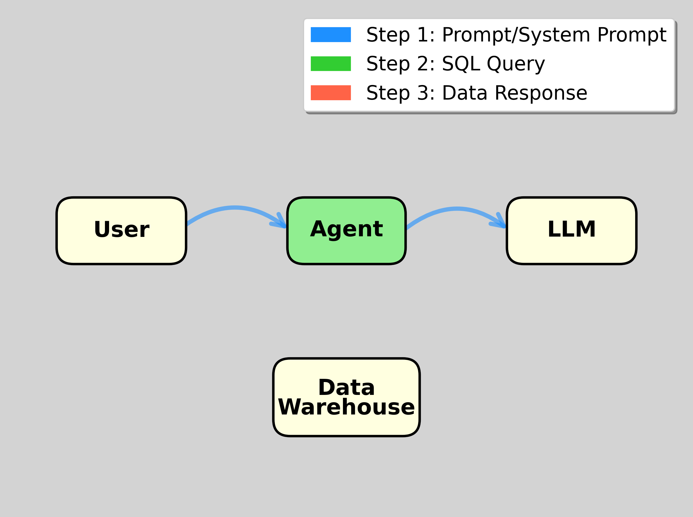
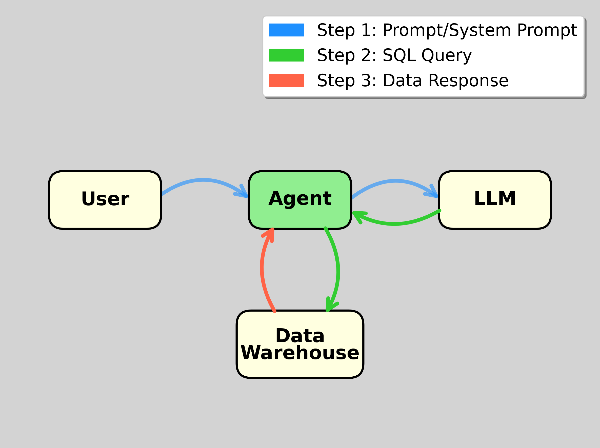
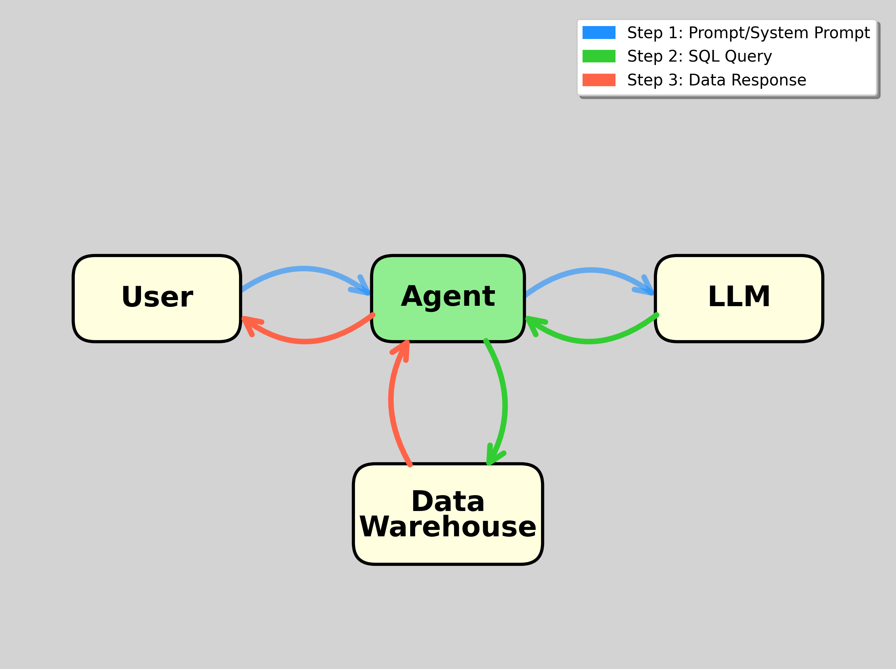

Incorporating AI
into Teaching and
Teaching about AI
Rice University
FMA 2025
Life was the same for 40 years

VisiCalc introduced for the Apple II in 1979

Lotus-123 introduced for the IBM PC in 1983

Microsoft Excel introduced for Windows in 1987
Now, with AI, we’re all in the same boat
It’s hard to keep up!


Incorporating AI into Teaching
Chatbots
- Obviously, students already use chatbots
- We should encourage them to use chatbots even more - for idea generation, planning work, and doing work (for which they are responsible, of course)
- ChatGPT, Claude, etc. write and run Python code to do numerical calculations, so hallucinations are not really a problem.*
*Except that they sometimes think it’s OK to use synthetic data without telling us, instead of the data they are instructed to use.
sequence of instruction
- We generally teach concepts first with slides (or board)
- Then show in tools (usually Excel)
- Now, there is a next step: chatbots
Aaron Linsky, CTO, AIA Labs at Bridgewater:
We’ve been developing capabilities powered by Claude since 2023 within AIA Labs.
Claude powered the first versions of our Investment Analyst Assistant, which streamlined our analysts’ workflow by generating Python code, creating data visualizations, and iterating through complex financial analysis tasks with the precision of a junior analyst.
Yeyati, Brookings, 2025:
As AI models begin to handle underwriting, compliance, and asset allocation, the traditional architecture of financial work is undergoing a fundamental shift.
As job descriptions evolve, so does the definition of financial talent. Excel is no longer a differentiator. Python is fast becoming the new Excel.
But technical skills alone will not cut it. The most in demand profiles today are those that speak both AI and finance, and can move between legal, operational, and data contexts without losing the plot.
example 1 (after Excel)
In class, iteratively develop a prompt to get the best performance from a chatbot on a valuation case
- Start simple, evaluate answer
- Get class to help build prompt to avoid errors, get better answer
- Try new prompt, evaluate again, write a better one
- Save prompt, try prompt on a different case
- Can use any chatbot that codes, but Claude is best (today) because it can produce Excel workbooks
Live demos are risky
Prompt Example 1 (Claude)
Read the uploaded case. Ignore the valuation method described in the case. Instead, generate pro forma statements and perform a two-stage DCF analysis.
Document your assumptions and your reasons for them. Generate an Excel workbook and a Word doc. Format the Excel worksheets nicely.
Prompt Example 2 (Julius)
Using the latest version of yfinance, get closing prices for SPY, IEF, and GLD at a monthly frequency since 1990.
Compute returns as percent changes. Compute the sample means and covariance matrix. Compute the mean-variance frontier.
Assuming a monthly risk-free rate of 0.04/12, calculate the tangency portfolio. Plot the mean-variance frontier, SPY, IEF, and GLD, the tangency portfolio, and the capital allocation line.
Prompt Example 3 (Google Colab)
Using the latest version of yfinance, get closing prices for WMT since January 2020. Compute returns as percent changes.
Get monthly Fama-French factors from French’s data library using pandas datareader. Divide the Fama-French data by 100 to put it in decimal format. Reconcile the date formats of the Fama-French and Yahoo data and merge them.
Compute excess returns for WMT using RF from the Fama-French data. Regress the excess returns on Mkt-RF. Create a scatter plot with regression line.
How to grade?
- Our graduates must be able to prompt chatbots and evaluate and refine the work of chatbots.
- Replace “turn in an Excel workbook” with “turn in a chat, what was produced by the chat, and your evaluation of the product.”
- Assign what used to be a group project as an in-class exam with AI assistance allowed.
MIT/Media Labs State of AI in Business 2025
Workers from over 90% of the companies we surveyed reported regular use of personal AI tools for work tasks. In fact, almost every single person used an LLM in some form for their work.
teaching ai
Tools vs Concepts
We use tools to teach concepts
- It’s easier to explain NPV in a spreadsheet than with words alone
- It’s easier to explain AI-assisted financial analysis using AI tools than with words alone
But we can’t just teach tools: tomorrow’s AI tools will be different from today’s.
An overview case
- Describes creation of a custom chatbot
- Discusses reliability, bias, compliance, data privacy, trust of customers
The AI landscape

- Apps can use AI
- Chatbots are apps
- Agents are chatbots with tools
- Agents include database agents
In March 2025, Y Combinator CEO Garry Tan and managing partner Jared Friedman stated that
for roughly a quarter of the startups in their Winter 2025 cohort, 95% of the codebase was written by AI.

Building apps
Apps automate routine tasks
Browser-based apps can be deployed:
- Locally (install Python + Streamlit)
- In the cloud for demonstration (ngrok, get free access key)
- Permanently in the cloud (Koyeb, Render, Heroku, …)
Prompt example 4 (Replit)
Create a retirement planning app that allows a user to enter (i) current account balance, (ii) annual savings (constant), (iii) years to retirement, (iv) mean and standard deviation of annual returns.
Simulate normally distributed annual returns for 1,000 lifetimes and present an analysis, including a density plot of final balances and percentiles. Highlight the mean and median on the density plot.
Prompt example 5 (colab)
Create a streamlit app in which the user inputs a ticker, and the app calculates a beta for the stock and produces the scatterplot as done for WMT before and also implements the following:
My ngrok access key is stored as a secret key. Use it to deploy the app.
prompt example 6 (colab)
Add the following functionality to the streamlit app:
Use pandas datareader to get the most recent three-month T-bill rate from FRED. Assume a 6% market risk premium. Use the risk-free rate and the estimated beta to compute the cost of equity capital.
Create a Word doc containing the scatterplot and a table displaying the cost of capital calculation. Provide a download link. Deploy on ngrok.
AI-Enabled Apps
Requirements
- API key from LLM host (OpenAI, Anthropic, …)
- Can use Open Router for free keys and free (open source) LLMs.
prompt example 7 (colab)
Add the following functionality to the Streamlit app:
Use my OpenAI API key stored as a secret key. Send the ticker and all elements of the cost of capital calculation to GPT 4.1 and ask for a discussion of the analysis and its meaning.
Include the analysis from GPT 4.1 in the Word doc with the scatterplot and cost-of-capital table. Deploy on ngrok.
Custom Chatbots
A custom chatbot is an app consisting of
- User interface
- API connection to an LLM, which has possibly been fine-tuned
- System prompt
- Possible retrieval of documents
- Possible use of tools
System prompt is fundamental
- The simplest custom chatbot is an app that passes messages back and forth between a user and an LLM.
- The basic element that makes it a ‘custom chatbot’ is its system prompt.
A system prompt is text that is sent to the LLM along with each user prompt. It contains information and instructions for the LLM.
Custom Chatbot structure

prompt example 8 (colab)
Create a custom chatbot as a streamlit app. The app should accept a user prompt and display a response.
Use my OpenAI API key that is stored as a secret key. Route prompts to GPT 4.1.
For the system prompt, use “Reply in pig Latin.” Deploy on ngrok.
RAG (Retrieval Augmented Generation) chatbots
- Break documents into chunks (~paragraphs, overlapping)
- Calculate vector embedding of each chunk based on some embedding scheme
- Calculate embedding of user prompt. Find similar chunks.
- Send prompt and chunks to AI model.
- Key element of many corporate AI implementations
Example RAG chatbots
- Google’s Notebook LM
- Can vibe code your own from class materials or textbook
AI Agents
Agent = Chatbot + Tools
- An AI agent is a chatbot equipped with tools to do things.
- Claude and ChatGPT are agents - they can send code to Python environments.
- Database tools are very useful for chatbots
Claude for Financial Services
From Anthropic:
Through data providers, Claude has real-time access to comprehensive financial information:
- Box
- Daloopa
- Databricks
- FactSet
- Morningstar
- Palantir
- PitchBook
- S&P Global
- Snowflake
Why mba students should learn about agents
Fortune, 9-14-2025:
PromptQL, an enterprise AI platform created by San Francisco-based developer tooling company Hasura, is doling out $900-per-hour wages to its engineers tasked with building and deploying AI agents to analyze internal company data using large language models (LLMs).
Tanmai Gopal, PromptQL’s cofounder and CEO, said “MBA types … are very strategic thinkers, and they’re smart people, but they don’t have an intuition for what AI can do.”
Structure of Database Agents
agent passes prompt from user to LLM

May require chatting at this stage to clarify user’s request
agent passes SQL from LLM to data warehouse

Data Warehouse passes response to agent

Response could be error message
If so, agent should send to LLM for new SQL code
agent passes data from warehouse to user

Adding Functionality
Database Agent \(\mapsto\) Tool
- Configure the database agent as a tool for an existing chatbot with Python capabilities
- OpenAI’s Assistants API
- Anthropic’s Model Context Protocol (MCP)
Demos (all vibe coded)
- Rice Business Stock Market Data Portal
- Claude MCP server for the data portal
One more tool
Claude Code
- Probably not for students, but for research and teaching prep
- Uses standard Anthropic models, but must have great system prompt
- Runs in terminal or can use as chat assistant in VS Code, Cursor, or Windsurf.
Claude Code capabilities
- Create, edit, copy, move, delete files
- Write and run Python scripts and notebooks
- Write and build Latex documents, including beamer
- Create and edit Word docs and PowerPoint decks
- Create, edit, and render q Quarto docs for web pages and html slides
- Create GitHub repos and push and launch apps on hosts (Koyeb, Render, …)
- And you can chat with it about anything
Demo claude code prompt
Create a LaTeX doc in the article style with Hello World as the title. Compile to pdf.
It’s even more helpful when used in VS Code etc. (which are full-featured LaTeX editors/compilers and Python editors/interpreters)
Do this analysis and generate a figure or LaTeX table and insert it into the document … Read this paragraph and suggest improvements … Make these global edits …
QUESTIONS?